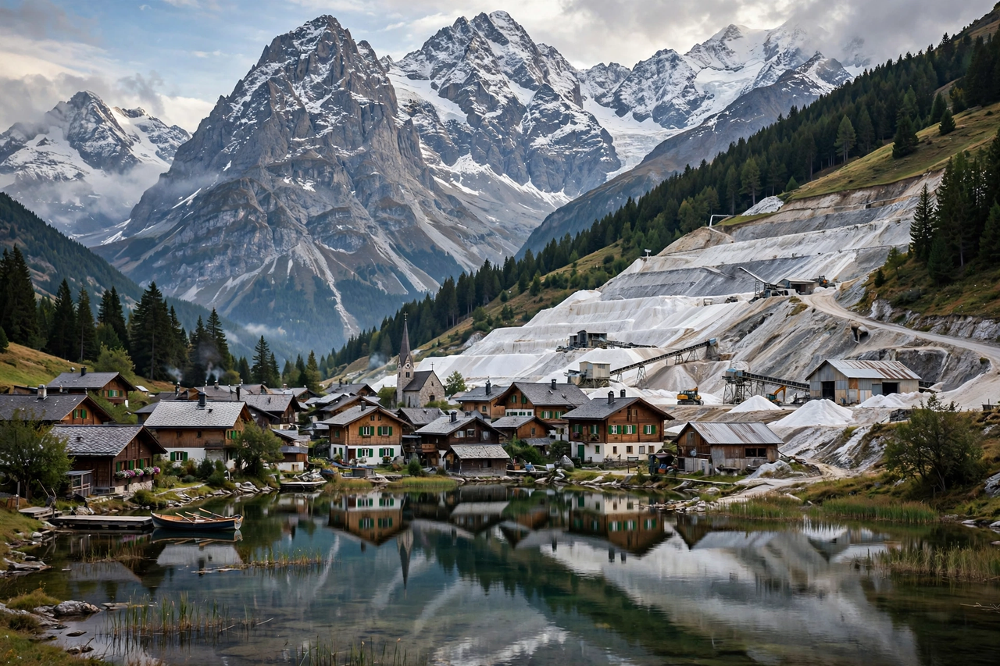

Hallstatt culture
| Hallstatt culture | |
|---|---|
| Period | Late Bronze Age to Early Iron Age |
| Dates | c. 1200–450 BC (phases HaA–HaD) |
| Type site | Hallstatt, Salzkammergut, Austria |
| Preceded by | Urnfield culture |
| Followed by | La Tène culture |

The Hallstatt culture was the predominant Western and Central European archaeological culture of the Late Bronze Age and Early Iron Age, spanning roughly 1200 to 450 BC. It is named for the rich cemetery and prehistoric salt mines at Hallstatt in the Austrian Salzkammergut, excavated from 1846 by Johann Georg Ramsauer, who uncovered over a thousand burials. The culture is widely associated with early Celtic-speaking peoples and is the direct ancestor of the La Tène culture of the later Iron Age.
Chronology and distribution
Archaeologists divide Hallstatt into four phases. Phases A and B (c. 1200–800 BC) belong to the Late Bronze Age and overlap the Urnfield world of cremation cemeteries. Phase C (c. 800–620 BC) marks the adoption of iron and the appearance of richly furnished inhumation burials with four-wheeled wagons and horse gear. Phase D (c. 620–450 BC) sees the floruit of "princely seats" (Fürstensitze) — fortified hilltop centres such as the Heuneburg on the Danube and Mont Lassois in Burgundy — in an eastern zone (modern Austria, Bohemia, Bavaria) and a western zone (Baden-Württemberg, Switzerland, eastern France).
Salt, trade and society
The wealth of the Hallstatt elite rested substantially on salt — "white gold" — mined at Hallstatt and Hallein and traded across Europe, together with control of routes linking the Mediterranean world with the north. Imports found in princely graves include Greek bronze vessels, Etruscan goods, silk and wine-drinking equipment: the giant Greek krater buried with the "Lady of Vix" in Burgundy (c. 500 BC) and the bronze cauldron and couch in the Hochdorf chieftain's grave testify to a warrior-aristocracy performing status through Mediterranean feasting gear. Society appears to have been steeply hierarchical, with chiefs' dynasties, specialist craftsmen, and a mass of farming commoners.
Decline
Around 450 BC the princely centres of the western Hallstatt zone were abandoned amid social disruption, trade routes shifted, and the cultural centre of gravity moved northward to the Marne and Moselle regions, where the La Tène style emerged. The Hallstatt tradition nevertheless left deep traces in Celtic religion, art and social organisation, including the priestly traditions later described by Roman authors under the name of druids.
See also: Celts · Galatians · Hochdorf Chieftain's Grave